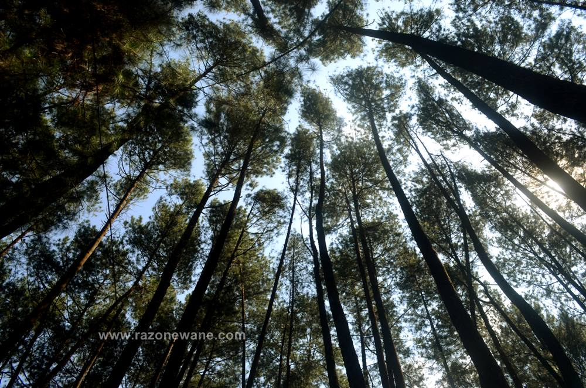

Lampung Barat bisa dibilang sebagai surganya wisata alam, pegunungan, sungai, hutan, pantai dengan ombak laut yang tinggi, pemandian air panas, situs sejarah dan sebagainya. Secara fisik wilayah kabupaten yang beribukota di Liwa ini memang memiliki kontur tanah yang sangat berbeda dengan kabupaten lainnya di Lampung. Lampung Barat juga merupakan areal terluas yang masuk sebagai bagian dari Taman Nasional Bukit Barisan yang memiliki hutan lindung sangat luas. Pinus ekopark, begitu sebutan tempat wisata ini.
Ternyata hutan pinus yang sering kita lihat dihutan-hutan Eropa atau Benua Amerika juga ada di Lampung Barat. Kalau yang suka dengan film-film coboy zaman dulu bisa kita lihat hutan-hutan yang ada berupa hutan pinus dan cemara.
Tempat wisata hutan pinus ini berdiri atas tercetusnya oleh Swadaya masyarakat, yang mana masyarakat yang tergabung dalam kelompok Cinta Alam Green Pekon Bina Pemerdayaan Desa Sukapura. Ecowisata Hutan Pinus di Sumber Jaya tersebut dibudidaya atas kerjasama KPHL II Liwa, KPA Green, HPPHL dan Kelompok HKM yang membentuk konsorsium yang bernama West Land. Kerjasama ini dibentuk untuk pengelolaan hutan pinus ini. Selain dengan tujuan untuk pelestarian hutan pinus, juga untuk meningkatkan pariwisata di Lampung Barat.
Pohon pinus yang ada di hutan pinus Sumber Jaya ini termasuk family Pinaceae dan klas Pinopsida. Pinus atau disebut juga sebagai pohon tusam Sumatra. Tusam Sumatra adalah pohon pinus yang hidup dan tumbuh di Pulau Sumatra. Pinus yang tumbuh di Sumatra berdaun jarum merupakan tumbuhan runjung (Pinophyta). Betuk pohon pinus tinggi menjulang dengan membentuk kerucut semakin keatas semakin kerucut.
Akar-akan pohon ini sangat kuat dan tahan menghadapi terpaan angina tau badai. Hutan pinus termasuk kedalam hutan tropika pada pegunungan dan berbukitan di Indonesia. Pohon pinus lebih senang tumbuh ditempat ketinggiannya berada diatas 600m di atas permukaan laut hingga sekitar 1500m diatas permukaan laut. Pinus juga memiliki ciri yaitu batang utama silindris, lurus dan tegak. Cabang-cabang membentuk putaran yang teratur, tinggi bebas bebas cabang bisa mencapai 10-25 meter.
Getah pohon pinus ini bisa disadap untuk menghasilkan bahan baku terpentin dan gondorukem. Perum Perhutani melakukan pembibitan dan pembudidayaan di Pulau Jawa dan Sumatra, selain untuk penanaman hutan pinus industry untuk memenuhi kebutuhan terpenting dan gondorukem.
Memasuki kawasan hutan ini sudah mulai terasa dingin dan sejuk. Suasana yang asri dan sejuk sangat terasa di wisata Pinus Ekopark pepohonan pinus yang rindang memberikan oksigen yang sangat baik untuk pengunjung. Ada aroma hutan pinus yang khas, bisa jadi ini menjadi aroma terapi untuk penghilang stress atau akibat diputus pacar. Teduhnya pohon-pohon pinus yang rapat membuat kita asik untuk duduk-duduk sambil ngobrol-ngobrol tentang masa depan. Aroma terapi hutan pinus penghilang stress akan semakin terasa jika ada angin sepoi-sepoi yang meniupkan pohon dan dedaunan pinus.
Di dalam area hutan pinus ini sudah dibuat berbagai rumah pohon, pondokan-pondokan, taman dan tempat duduk yang nyaman untuk kongkow-kongkow dengan keluarga atau teman. Kita juga bisa menyewa kain ayun yang dibentangkan antara dua pohon untuk tiduran sambil berayun. Jelas kalau kelamaan terayun di kain ayun ini kita bisa ketiduran karena udara sejuk, angin sepoi dan aroma pinus yang membuat urat syaraf kita kendur dan santai.
Jika dirasa belum cukup untuk bersenang-senang, maka bersantai dan rebahan di atas pepohonan adalah salah satu aktivitas yang cukup memuasakan. Dengan menyewa hammock sekitar 20K saja, saudara sudah mampu berbaring menikmati pesona pemandangan dari tempat yang tinggi. Dan juga kegiatan semacam ini memang tengah diminati oleh kalangan anak muda sekarang.
Bagi anda yang gemar selfie atau mengambil gambar, di Hutan Pinus Sumber Jaya telah disiapkan spot-spot foto menarik yang tak hanya memukau tetapi juga sangat cocok untuk menjadi daya tarik di platform media sosial seperti Instagram. Setiap sudut spot foto dirancang dengan cermat, menyajikan latar belakang yang alami dan penuh keindahan dari pesona hutan pinus ini. Dengan suasana yang natural, spot-spot foto ini tidak hanya mengabadikan momen, tetapi juga menciptakan pengalaman visual yang memukau bagi setiap pengunjung yang berhasrat untuk menikmati keindahan alam.
Untuk harga tiket masuk hutan pinus cukup terjangkau, dengan membayar Rp 15.000 saja, situ sudah bisa menikmati keindahan pemandangan dan fasilitas lengkap yang tersedia disini.
Bagi kamu yang ingin berkunjung kewisata ini, tak perlu ribet dan jangan ambil pusing untuk mengatur jadwal keberangkatan. soal nya, waktu operasional hutan pinus tersebut dibuka 24 jam untuk wisatawan, sehingga kalian bisa datang kapan saja semau saudara.